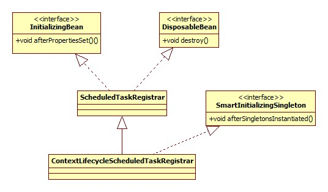

开头 从功能上来说，spring-task这个组件主要包括了两个/两种功能:
任务的定时调度/执行，对应xml配置的task:scheduler和task:scheduled-tasks标签。
方法异步执行，对应xml配置的task:executor标签。
task:annotation-driven标签被以上两种功能共有。下面就这两种功能分别进行说明。
定时器 用法 以XML作为示例，基于注解的也是一样的。
1 2 3 4 5 <task:scheduler id ="scheduler" pool-size ="3" /> <bean id ="task" class ="task.Task" /> <task:scheduled-tasks scheduler ="scheduler" > <task:scheduled ref ="task" method ="print" cron ="0/5 * * * * ?" /> </task:scheduled-tasks >
定义了一个定时任务，每隔5秒执行Task的print方法，Task:
1 2 3 4 5 public class Task public void print () System.out.println("print执行" ); } }
关于cron表达式可以参考:
深入浅出Spring task定时任务
解析 注册 此部分的解析器注册由TaskNamespaceHandler完成:
1 2 3 4 5 6 7 @Override public void init () this .registerBeanDefinitionParser("annotation-driven" , new AnnotationDrivenBeanDefinitionParser()); this .registerBeanDefinitionParser("executor" , new ExecutorBeanDefinitionParser()); this .registerBeanDefinitionParser("scheduled-tasks" , new ScheduledTasksBeanDefinitionParser()); this .registerBeanDefinitionParser("scheduler" , new SchedulerBeanDefinitionParser()); }
scheduler SchedulerBeanDefinitionParser源码:
1 2 3 4 5 6 7 8 9 10 11 12 @Override protected String getBeanClassName (Element element) return "org.springframework.scheduling.concurrent.ThreadPoolTaskScheduler" ; } @Override protected void doParse (Element element, BeanDefinitionBuilder builder) String poolSize = element.getAttribute("pool-size" ); if (StringUtils.hasText(poolSize)) { builder.addPropertyValue("poolSize" , poolSize); } }
由于SchedulerBeanDefinitionParser是AbstractSingleBeanDefinitionParser的子类，所以Spring将task:scheduler标签解析为一个BeanDefinition。其beanClass为org.springframework.scheduling.concurrent.ThreadPoolTaskScheduler。
scheduled-tasks 其解析的源码较长，在此不再贴出，解析之后形成的BeanDefinition结构如下图:
taskScheduler属性即指向task:scheduler标签，如果没有配置，此属性不存在。
Spring将每一个task:scheduled标签解析为一个Task(的子类)，其类图如下:
很明显可以看出，任务的类型是由cron, fixed-delay, fixed-rate, trigger四个属性决定的，fixed-delay和fixed-rate为IntervalTask。
注意一点: 四种任务集合并不是互斥的 。比如说一个task:scheduled标签同时配置了cron和trigger属性，那么此标签会导致生成两个beanClass分别为CronTask何TriggerTask的BeanDefinition产生，并分别被放到cronTasksList和triggerTasksList中。
从图中可以看出，task:scheduled的method和ref属性也被包装成了一个BeanDefinition, 其beanClass为org.springframework.scheduling.support.ScheduledMethodRunnable.
调度执行 入口便是ContextLifecycleScheduledTaskRegistrar，类图:

ContextLifecycleScheduledTaskRegistrar只实现了afterSingletonsInstantiated方法:
1 2 3 4 @Override public void afterSingletonsInstantiated () scheduleTasks(); }
ScheduledTaskRegistrar.scheduleTasks:
1 2 3 4 5 6 7 8 9 10 11 12 13 14 15 16 17 18 19 20 21 22 23 24 25 26 27 protected void scheduleTasks () if (this .taskScheduler == null ) { this .localExecutor = Executors.newSingleThreadScheduledExecutor(); this .taskScheduler = new ConcurrentTaskScheduler(this .localExecutor); } if (this .triggerTasks != null ) { for (TriggerTask task : this .triggerTasks) { addScheduledTask(scheduleTriggerTask(task)); } } if (this .cronTasks != null ) { for (CronTask task : this .cronTasks) { addScheduledTask(scheduleCronTask(task)); } } if (this .fixedRateTasks != null ) { for (IntervalTask task : this .fixedRateTasks) { addScheduledTask(scheduleFixedRateTask(task)); } } if (this .fixedDelayTasks != null ) { for (IntervalTask task : this .fixedDelayTasks) { addScheduledTask(scheduleFixedDelayTask(task)); } } }
scheduler初始化 可见，如果没有配置task:scheduler，那么在这里将会进行其初始化工作。
Spring定义了TaskScheduler接口，独立于jdk之外，这样做的目的在于能够同时支持JDK和quartz。对于默认来说，Spring将真正的逻辑全部委托给jdk的Executor。
TaskScheduler类图:
ConcurrentTaskExecutor来自另一个继承体系: TaskExecutor，这和spring-task的另一个重要功能，异步执行，这里暂且不表。
任务调度 以喜闻乐见的CronTask为例。ScheduledTaskRegistrar.scheduleCronTask:
1 2 3 4 5 6 7 public ScheduledTask scheduleCronTask (CronTask task) ScheduledTask scheduledTask = this .unresolvedTasks.remove(task); if (this .taskScheduler != null ) { scheduledTask.future = this .taskScheduler.schedule(task.getRunnable(), task.getTrigger()); } return (newTask ? scheduledTask : null ); }
Trigger 可见，Cron也是通过Trigger实现的，在Spring中，Trigger被定义为决定一个任务的下一次执行时间 。其类图:
那么问题来了，字符串形式的cron表达式是在何时被解析为Trigger的呢?
Cron解析 CronTask构造器:
1 2 3 public CronTask (Runnable runnable, String expression) this (runnable, new CronTrigger(expression)); }
CronTrigger构造器:
1 2 3 public CronTrigger (String expression) this .sequenceGenerator = new CronSequenceGenerator(expression); }
答案便在CronSequenceGenerator构造器了:
1 2 3 4 5 6 7 8 9 public CronSequenceGenerator (String expression) this (expression, TimeZone.getDefault()); } public CronSequenceGenerator (String expression, TimeZone timeZone) this .expression = expression; this .timeZone = timeZone; parse(expression); }
具体是如何解析的，不再深入。
ConcurrentTaskScheduler.schedule:
1 2 3 4 5 @Override public ScheduledFuture<?> schedule(Runnable task, Trigger trigger) { ErrorHandler errorHandler = (this .errorHandler != null ? this .errorHandler : TaskUtils.getDefaultErrorHandler(true )); return new ReschedulingRunnable(task, trigger, this .scheduledExecutor, errorHandler).schedule(); }
调度 从上面的源码可以看出，调度是通过ReschedulingRunnable来完成的，其类图:
schedule方法:
1 2 3 4 5 6 7 8 9 10 11 public ScheduledFuture<?> schedule() { synchronized (this .triggerContextMonitor) { this .scheduledExecutionTime = this .trigger.nextExecutionTime(this .triggerContext); if (this .scheduledExecutionTime == null ) { return null ; } long initialDelay = this .scheduledExecutionTime.getTime() - System.currentTimeMillis(); this .currentFuture = this .executor.schedule(this , initialDelay, TimeUnit.MILLISECONDS); return this ; } }
可以看出，这里设置了在下一次执行窗口调用this(ReschedulingRunnable)，从类图可以看出，ReschedulingRunnable本身实现了Runnable接口，其run方法:
1 2 3 4 5 6 7 8 9 10 11 12 13 @Override public void run () Date actualExecutionTime = new Date(); super .run(); Date completionTime = new Date(); synchronized (this .triggerContextMonitor) { this .triggerContext.update(this .scheduledExecutionTime, actualExecutionTime, completionTime); if (!this .currentFuture.isCancelled()) { schedule(); } } }
对我们自定义逻辑的调用是通过super.run实现的:
1 2 3 4 @Override public void run () this .delegate.run(); }
delegate便是前面提到过的ScheduledMethodRunnable，其run方法:
1 2 3 4 5 @Override public void run () ReflectionUtils.makeAccessible(this .method); this .method.invoke(this .target); }
当然这只是针对CronTask的实现，而对于IntervalTask就要简单多了，ScheduledTaskRegistrar.scheduleFixedDelayTask部分源码:
1 2 3 4 5 6 7 8 9 10 11 12 13 14 public ScheduledTask scheduleFixedDelayTask (IntervalTask task) if (this .taskScheduler != null ) { if (task.getInitialDelay() > 0 ) { Date startTime = new Date(System.currentTimeMillis() + task.getInitialDelay()); scheduledTask.future = this .taskScheduler.scheduleWithFixedDelay(task.getRunnable(), startTime, task.getInterval()); } else { scheduledTask.future = this .taskScheduler.scheduleWithFixedDelay(task.getRunnable(), task.getInterval()); } } return (newTask ? scheduledTask : null ); }
总结 从上面的说明可以看出，Spring其实将核心逻辑委托给了JDK的Executors.newSingleThreadScheduledExecutor()来实现，那么JDK是如何用一个线程来定时执行多个任务的呢?
异步执行 配置 必须以注解的方式进行配置，xml:
1 2 <task:executor id ="executor" pool-size ="3" /> <task:annotation-driven executor ="executor" />
这样在类或方法上加上注解即可:
1 2 3 4 @Async ("executor" )public void print () System.out.println("print执行" ); }
原理 猜测:
Spring会为带有@Async的组件生成代理子类实现对原生组件的替换，代理子类将异步执行的方法包装为Task(Runnable)提交到jdk的线程池即可。
申明 本文转载自seaswalker的github ，转载授权 ，由我在万达摆地摊 整理发布。